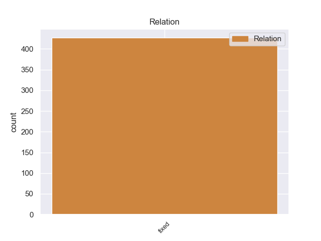
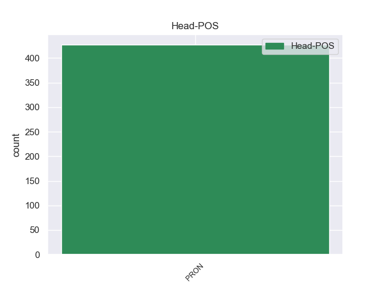

Distribution of features within this leaf



non-conforming Examples:
1 Ученые _ _ _ _ 0 _ _ _
2 и _ _ _ _ 0 _ _ _
3 инженеры _ _ _ _ 0 _ _ _
4 исходят _ _ _ _ 0 _ _ _
5 из _ _ _ _ 0 _ _ _
6 того _ _ _ _ 0 _ _ _
7 , _ _ _ _ 0 _ _ _
8 что _ _ _ _ 0 _ _ _
9 им _ _ _ _ 0 _ _ _
10 придется _ _ _ _ 0 _ _ _
11 функционировать _ _ _ _ 0 _ _ _
12 в _ _ _ _ 0 _ _ _
13 городских _ _ _ _ 0 _ _ _
14 и _ _ _ _ 0 _ _ _
15 домашних _ _ _ _ 0 _ _ _
16 условиях _ _ _ _ 0 _ _ _
17 , _ _ _ _ 0 _ _ _
18 то то PRON _ Animacy=Inan|Case=Nom|Gender=Neut|Number=Sing 0 _ _ _
19 есть быть VERB _ Aspect=Imp|Mood=Ind|Number=Sing|Person=3|Tense=Pres|VerbForm=Fin|Voice=Act 18 fixed 18:fixed _
20 в _ _ _ _ 0 _ _ _
21 " _ _ _ _ 0 _ _ _
22 человеческом _ _ _ _ 0 _ _ _
23 " _ _ _ _ 0 _ _ _
24 интерьере _ _ _ _ 0 _ _ _
25 с _ _ _ _ 0 _ _ _
26 лестницами _ _ _ _ 0 _ _ _
27 , _ _ _ _ 0 _ _ _
28 дверями _ _ _ _ 0 _ _ _
29 и _ _ _ _ 0 _ _ _
30 другими _ _ _ _ 0 _ _ _
31 препятствиями _ _ _ _ 0 _ _ _
32 специфического _ _ _ _ 0 _ _ _
33 размера _ _ _ _ 0 _ _ _
34 . _ _ _ _ 0 _ _ _
1 То то PRON _ Animacy=Inan|Case=Nom|Gender=Neut|Number=Sing 0 _ _ _
2 есть быть VERB _ Aspect=Imp|Mood=Ind|Number=Sing|Person=3|Tense=Pres|VerbForm=Fin|Voice=Act 1 fixed 1:fixed _
3 губительная _ _ _ _ 0 _ _ _
4 деятельность _ _ _ _ 0 _ _ _
5 человечества _ _ _ _ 0 _ _ _
6 не _ _ _ _ 0 _ _ _
7 вызывает _ _ _ _ 0 _ _ _
8 у _ _ _ _ 0 _ _ _
9 него _ _ _ _ 0 _ _ _
10 сомнений _ _ _ _ 0 _ _ _
11 . _ _ _ _ 0 _ _ _
1 Но _ _ _ _ 0 _ _ _
2 в _ _ _ _ 0 _ _ _
3 то _ _ _ _ 0 _ _ _
4 же _ _ _ _ 0 _ _ _
5 время _ _ _ _ 0 _ _ _
6 прокофьевские _ _ _ _ 0 _ _ _
7 увлечения _ _ _ _ 0 _ _ _
8 весьма _ _ _ _ 0 _ _ _
9 музыкальны _ _ _ _ 0 _ _ _
10 : _ _ _ _ 0 _ _ _
11 " _ _ _ _ 0 _ _ _
12 Эше _ _ _ _ 0 _ _ _
13 - _ _ _ _ 0 _ _ _
14 куда _ _ _ _ 0 _ _ _
15 скромней _ _ _ _ 0 _ _ _
16 ; _ _ _ _ 0 _ _ _
17 разбирая _ _ _ _ 0 _ _ _
18 ее _ _ _ _ 0 _ _ _
19 довольно _ _ _ _ 0 _ _ _
20 оригинальную _ _ _ _ 0 _ _ _
21 фамилию _ _ _ _ 0 _ _ _
22 , _ _ _ _ 0 _ _ _
23 я _ _ _ _ 0 _ _ _
24 случайно _ _ _ _ 0 _ _ _
25 натолкнулся _ _ _ _ 0 _ _ _
26 на _ _ _ _ 0 _ _ _
27 e-c-h-e _ _ _ _ 0 _ _ _
28 ( _ _ _ _ 0 _ _ _
29 Eche _ _ _ _ 0 _ _ _
30 ) _ _ _ _ 0 _ _ _
31 ; _ _ _ _ 0 _ _ _
32 т. то PRON _ Animacy=Inan|Case=Nom|Gender=Neut|Number=Sing 0 _ _ _
33 е. быть VERB _ Aspect=Imp|Mood=Ind|Number=Sing|Person=3|Tense=Pres|VerbForm=Fin|Voice=Act 32 fixed 32:fixed _
34 все _ _ _ _ 0 _ _ _
35 буквы _ _ _ _ 0 _ _ _
36 составляют _ _ _ _ 0 _ _ _
37 название _ _ _ _ 0 _ _ _
38 нот _ _ _ _ 0 _ _ _
39 ; _ _ _ _ 0 _ _ _
40 попробовав _ _ _ _ 0 _ _ _
41 на _ _ _ _ 0 _ _ _
42 рояле _ _ _ _ 0 _ _ _
43 и _ _ _ _ 0 _ _ _
44 повертев _ _ _ _ 0 _ _ _
45 и _ _ _ _ 0 _ _ _
46 так _ _ _ _ 0 _ _ _
47 и _ _ _ _ 0 _ _ _
48 сяк _ _ _ _ 0 _ _ _
49 , _ _ _ _ 0 _ _ _
50 я _ _ _ _ 0 _ _ _
51 получил _ _ _ _ 0 _ _ _
52 недурную _ _ _ _ 0 _ _ _
53 тему _ _ _ _ 0 _ _ _
54 , _ _ _ _ 0 _ _ _
55 которую _ _ _ _ 0 _ _ _
56 и _ _ _ _ 0 _ _ _
57 поместил _ _ _ _ 0 _ _ _
58 побочной _ _ _ _ 0 _ _ _
59 партией _ _ _ _ 0 _ _ _
60 в _ _ _ _ 0 _ _ _
61 свою _ _ _ _ 0 _ _ _
62 третью _ _ _ _ 0 _ _ _
63 фортепианную _ _ _ _ 0 _ _ _
64 сонату _ _ _ _ 0 _ _ _
65 , _ _ _ _ 0 _ _ _
66 которую _ _ _ _ 0 _ _ _
67 тогда _ _ _ _ 0 _ _ _
68 сочинял _ _ _ _ 0 _ _ _
69 … _ _ _ _ 0 _ _ _
70 " _ _ _ _ 0 _ _ _
1 Альтернативой _ _ _ _ 0 _ _ _
2 обычной _ _ _ _ 0 _ _ _
3 фармакотерапии _ _ _ _ 0 _ _ _
4 служит _ _ _ _ 0 _ _ _
5 фитотерапия _ _ _ _ 0 _ _ _
6 , _ _ _ _ 0 _ _ _
7 то то PRON _ Animacy=Inan|Case=Nom|Gender=Neut|Number=Sing 0 _ _ _
8 есть быть VERB _ Aspect=Imp|Mood=Ind|Number=Sing|Person=3|Tense=Pres|VerbForm=Fin|Voice=Act 7 fixed 7:fixed _
9 лечение _ _ _ _ 0 _ _ _
10 растениями _ _ _ _ 0 _ _ _
11 . _ _ _ _ 0 _ _ _
1 В _ _ _ _ 0 _ _ _
2 этом _ _ _ _ 0 _ _ _
3 случае _ _ _ _ 0 _ _ _
4 горные _ _ _ _ 0 _ _ _
5 породы _ _ _ _ 0 _ _ _
6 разрушаются _ _ _ _ 0 _ _ _
7 самопроизвольно _ _ _ _ 0 _ _ _
8 по _ _ _ _ 0 _ _ _
9 типу _ _ _ _ 0 _ _ _
10 " _ _ _ _ 0 _ _ _
11 спадающей _ _ _ _ 0 _ _ _
12 шелухи _ _ _ _ 0 _ _ _
13 " _ _ _ _ 0 _ _ _
14 , _ _ _ _ 0 _ _ _
15 то то PRON _ Animacy=Inan|Case=Nom|Gender=Neut|Number=Sing 0 _ _ _
16 есть быть VERB _ Aspect=Imp|Mood=Ind|Number=Sing|Person=3|Tense=Pres|VerbForm=Fin|Voice=Act 15 fixed 15:fixed _
17 внешние _ _ _ _ 0 _ _ _
18 слои _ _ _ _ 0 _ _ _
19 каменного _ _ _ _ 0 _ _ _
20 образования _ _ _ _ 0 _ _ _
21 постепенно _ _ _ _ 0 _ _ _
22 отделяются _ _ _ _ 0 _ _ _
23 , _ _ _ _ 0 _ _ _
24 подобно _ _ _ _ 0 _ _ _
25 шелухе _ _ _ _ 0 _ _ _
26 луковицы _ _ _ _ 0 _ _ _
27 , _ _ _ _ 0 _ _ _
28 и _ _ _ _ 0 _ _ _
29 в _ _ _ _ 0 _ _ _
30 результате _ _ _ _ 0 _ _ _
31 остается _ _ _ _ 0 _ _ _
32 только _ _ _ _ 0 _ _ _
33 твердое _ _ _ _ 0 _ _ _
34 шарообразное _ _ _ _ 0 _ _ _
35 ядро _ _ _ _ 0 _ _ _
36 . _ _ _ _ 0 _ _ _